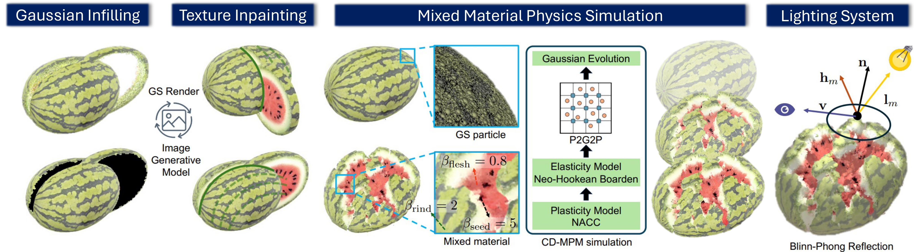
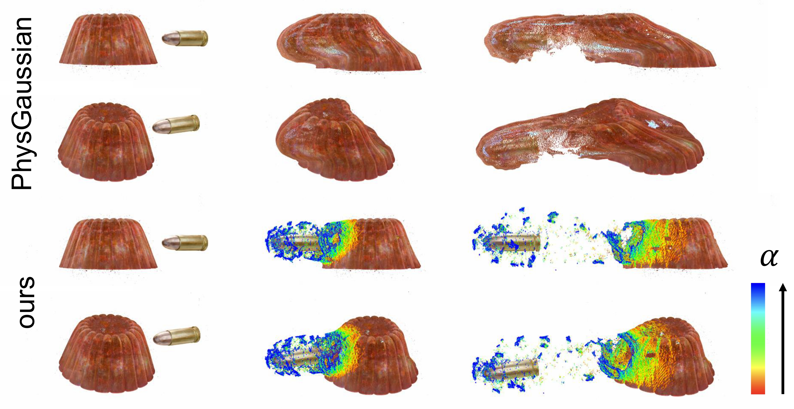

We propose GaussianFluent, a novel framework thatenables the completion of structurally consistent and photorealistic internal textures and structures for Gaussian Splatting, thereby supporting mixed-material physics simulation with dynamic lighting. In contrast to prior GS-based simulation work that primarily focuses on surface and elastic materials, GaussianFluent addresses three key challenges hindering realistic brittle fracture simulation within the GS representation. First, the surface-centric nature of GS leads to a lack of visually realistic internal structures and textures. Second, existing GS simulation efforts lack a method suitable for brittle fracture phenomena. Third, the direct encoding of lighting information into pherical Harmonic in GS hampers the accurate representation of dynamic shading variations on newly exposed surfaces during fracture, even when internal geometry and textures are correctly modeled.
To address these limitations, GaussianFluent introduces a multi-view consistent internal texture generation process, overcoming the challenges faced by existing generative models. We further present a Continuum Damage Mechanics Material Point Method tailored for GS, enabling physically plausible simulation of brittle fracture. Additionally, we develop a Blinn-Phong lighting system supporting multiple objects and light sources, together with a robust normal estimation method to ensure faithful shadow and shading variations throughout the fracture process. Experimental results demonstrate that GaussianFluent effectively reconstructs photorealistic internal textures and delivers high-fidelity, real-time renderings across diverse object state simulations, such as bullet shooting, fruit slicing, and watermelon smashing, underscoring its potential for realistic animation and downstream applications.

We propose GaussianFluent (Figure 3) to enable realistic simulation of dynamic scenes, particularly material fracture, within the 3DGS framework. Our method first generates internal structures and textures for GS representations, followed by simulating fracture dynamics using a CD-MPM framework. To achieve realistic rendering, we further incorporate dynamic lighting to accurately visualize newly exposed fracture surfaces.
We extend 3DGS simulation framework of PhysGaussian by incorporating the CD-MPM with support for mixed materials.

Different views of jelly-shooting simulations. An advantage of Gaussian Simulation is that it can render different views in real-time.
GaussianFluent supports scene relighting. Here are examples of multiple objects relighting.
Our method further support calcute lighting shadow and simulation with environment. Here are two examples of watermelon interaction with environment.